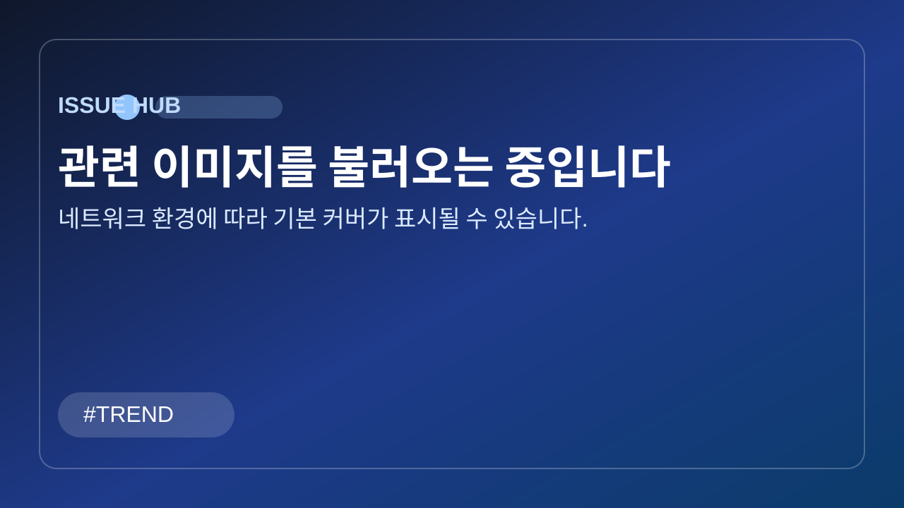

AI 생산성 현실 점검: 투자 확대에도 성과가 안 보이는 이유
수천억 넣었는데 왜 그대로일까: AI 도입의 불편한 성적표

큐레이터 한줄평
"도구를 사는 것만으로는 생산성이 오르지 않고, 목표·역할·평가 체계를 함께 바꿔야 성과가 쌓입니다. 결국 승부처는 모델 스펙이 아니라 실행 설계입니다."
기업들은 지난 2~3년 동안 AI를 가장 빠르게 도입한 기술로 밀어붙였습니다. 대규모 예산이 생성형 AI, 코파일럿, 자동화 플랫폼으로 이동했고, 경영진은 생산성 혁신을 핵심 목표로 내세웠습니다. 하지만 최근 공개된 해외 조사들은 기대와 다른 결과를 보여줍니다. 도입 자체는 빠른데, 수익성과 업무 효율 지표는 눈에 띄게 움직이지 않았다는 것입니다.
미국, 영국, 독일, 호주의 기업 임원 6,000명을 대상으로 한 NBER 기반 조사에서는 다수의 응답자가 AI 도입 뒤 고용과 생산성 변화가 거의 없었다고 답했습니다. 도입률은 높아졌지만 현장 체감은 제한적이어서, 기업 내부에서 "AI를 쓰고는 있는데 일하는 방식은 크게 안 바뀌었다"는 반응이 나옵니다.
실제 운영 현장을 보면 효과가 없는 것은 아닙니다. 메일 작성, 문서 초안, 회의 요약 같은 단위 업무에서는 분명한 시간 절감이 관찰됩니다. 다만 이 절감이 조직 전체 생산성으로 연결되려면 업무 흐름, 승인 구조, 협업 방식까지 재설계되어야 하는데, 많은 기업이 이 단계에 도달하지 못하고 있습니다.
일부 사례에서는 기대 대비 역효과도 보고됩니다. 시범 도입 과정에서 도구 적응 비용이 커지거나, AI 결과를 검증하는 추가 시간이 생겨 초반 효율이 오히려 떨어지는 경우입니다. 마이크로소프트 코파일럿 ROI 논의가 지속되는 배경도 같은 맥락입니다.
글로벌 컨설팅 조사들 역시 방향은 비슷합니다. "성과를 기대한 비율"은 높지만, 실제 매출 확대나 비용 절감으로 확인된 비율은 낮게 나타납니다. 즉, 기술 성숙도보다 조직 실행력이 핵심 병목이라는 해석이 힘을 얻고 있습니다.
결국 질문은 단순합니다. AI를 도입했는가가 아니라, AI를 기준으로 업무를 다시 설계했는가입니다. KPI 재정의, 역할 재배치, 검증 체계, 재교육이 함께 돌아가야 투자 대비 효과가 숫자로 드러납니다. 2026년 기업의 AI 경쟁력은 도입률이 아니라 전환 완성도에서 갈릴 가능성이 큽니다.
핵심 요약
- 대규모 AI 투자에도 상당수 기업이 생산성과 고용 지표에서 뚜렷한 변화를 체감하지 못했습니다
- 도입 속도는 빠르지만 실제 활용은 메일·요약 등 부분 자동화에 머무는 사례가 많습니다
- 영국 정부 시범사업 등 일부 현장에서는 기대 대비 성과가 제한적이거나 역효과도 관찰됐습니다
- 핵심 병목은 모델 성능이 아니라 조직의 프로세스 재설계와 운영 방식 전환입니다
- 2026년 기업 과제는 'AI 도입'이 아니라 'AI 기반 업무 시스템 전환'으로 이동하고 있습니다
커뮤니티 반응